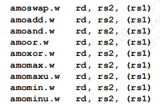

基于OpenSBI v1.3对基本boot流程做简要解析

fw_base.S
OpenSBI从这里进入，这里提供了_start符号(原子指令参考[1])，对于非启动核，会一直等待知道进行boot的核完成relocate以及boot等工作后才进入后续流程.
.section .entry, "ax", %progbits
.align 3
.globl _start
.globl _start_warm
_start:
/* Find preferred boot HART id */
MOV_3R s0, a0, s1, a1, s2, a2
call fw_boot_hart //这里根据所选择的固件类型（jump、dynamic、payload决定），对于dynamic返回执行boot的hartid，其他返回-1；
add a6, a0, zero
MOV_3R a0, s0, a1, s1, a2, s2
li a7, -1
beq a6, a7, _try_lottery //如果是jump或payload固件，则尝试彩票算法决定执行boot的hart
/* Jump to relocation wait loop if we are not boot hart */
bne a0, a6, _wait_relocate_copy_done
_try_lottery:
/*2. 原子写操作：先将(a6)中的内容记为t，然后将a7+t的内容写入(a6),然后把t写入a6
* 先执行的hart：a7 为 1， (a6) = _relocate_lottery = 1，a6=0
* 后执行的hart：由于每个cpu都有一个寄存器，所以此时当前cpu的a6依然为_relocate_lottery地址，但是(a6)的值为1，
* 执行后 a7为1，a6) = _relocate_lottery = 2，a6=1
* 总结：先执行amoadd.w a6, a7, (a6)指令的cpu会成为冷启动的cpu，其他cpu会跳转到_wait_relocate_copy_done等待
*/
/* Jump to relocation wait loop if we don't get relocation lottery */
lla a6, _relocate_lottery
li a7, 1
amoadd.w a6, a7, (a6)
bnez a6, _wait_relocate_copy_done
_wait_relocate_copy_done:
lla t0, _fw_start
lla t1, _link_start
REG_L t1, 0(t1)
beq t0, t1, _wait_for_boot_hart //此处比较是否需要重定位，若不需要则直接等待进行boot的hart
lla t2, _boot_status
lla t3, _wait_for_boot_hart
sub t3, t3, t0
add t3, t3, t1
1:
/* waitting for relocate copy done (_boot_status == 1) */
li t4, BOOT_STATUS_RELOCATE_DONE
REG_L t5, 0(t2)
/* Reduce the bus traffic so that boot hart may proceed faster */
nop
nop
nop
bgt t4, t5, 1b
jr t3 //还是跳转到_wait_for_boot_hart
#endif
/* waiting for boot hart to be done (_boot_status == 2) */
_wait_for_boot_hart:
li t0, BOOT_STATUS_BOOT_HART_DONE
lla t1, _boot_status
REG_L t1, 0(t1)
/* Reduce the bus traffic so that boot hart may proceed faster */
div t2, t2, zero
div t2, t2, zero
div t2, t2, zero
bne t0, t1, _wait_for_boot_hart
接下来进行OpenSBI固件的重定位：
/*获取SBI固件自身在内存中的地址以及将要load的地址*/
/* Save load address */
lla t0, _load_start
lla t1, _fw_start
REG_S t1, 0(t0)
#ifdef FW_PIC
··· //由于未使用动态链接，此处不过多介绍
#else
/*此处由之前通过彩票算法决定的hart进行重定位，其他hart进入_wait_for_boot_hart等待*/
/* Relocate if load address != link address */
_relocate:
lla t0, _link_start
REG_L t0, 0(t0)
lla t1, _link_end
REG_L t1, 0(t1)
lla t2, _load_start
REG_L t2, 0(t2)
beq t0, t2, _relocate_done
sub t3, t1, t0
add t3, t3, t2
lla t4, _relocate_done
sub t4, t4, t2
add t4, t4, t0
blt t2, t0, _relocate_copy_to_upper
_relocate_copy_to_lower:
ble t1, t2, _relocate_copy_to_lower_loop
lla t3, _relocate_lottery
BRANGE t2, t1, t3, _start_hang
lla t3, _boot_status
BRANGE t2, t1, t3, _start_hang
lla t3, _relocate
lla t5, _relocate_done
BRANGE t2, t1, t3, _start_hang
BRANGE t2, t1, t5, _start_hang
BRANGE t3, t5, t2, _start_hang
_relocate_copy_to_lower_loop:
REG_L t3, 0(t2)
REG_S t3, 0(t0)
add t0, t0, __SIZEOF_POINTER__
add t2, t2, __SIZEOF_POINTER__
blt t0, t1, _relocate_copy_to_lower_loop
jr t4
_relocate_copy_to_upper:
ble t3, t0, _relocate_copy_to_upper_loop
lla t2, _relocate_lottery
BRANGE t0, t3, t2, _start_hang
lla t2, _boot_status
BRANGE t0, t3, t2, _start_hang
lla t2, _relocate
lla t5, _relocate_done
BRANGE t0, t3, t2, _start_hang
BRANGE t0, t3, t5, _start_hang
BRANGE t2, t5, t0, _start_hang
_relocate_copy_to_upper_loop:
add t3, t3, -__SIZEOF_POINTER__
add t1, t1, -__SIZEOF_POINTER__
REG_L t2, 0(t3)
REG_S t2, 0(t1)
blt t0, t1, _relocate_copy_to_upper_loop
jr t4 //此处jump的地址是relocate后的_relocate_done
在完成固件的relocate之后跳转到t4寄存器存储的地址，也就是relocate后的_relocate_done地址， _relocate_done见下
_relocate_done:
/*
* Mark relocate copy done
* Use _boot_status copy relative to the load address
*/
lla t0, _boot_status
#ifndef FW_PIC
lla t1, _link_start
REG_L t1, 0(t1)
lla t2, _load_start
REG_L t2, 0(t2)
sub t0, t0, t1
add t0, t0, t2
#endif
li t1, BOOT_STATUS_RELOCATE_DONE //这里将状态标志设置为完成重定向
REG_S t1, 0(t0)
fence rw, rw
/*接下来从重定向后的地址开始执行一系列初始化，包括：
* 1、复位处理器所有寄存器；
* 2、清零BSS段；
* 3、设置临时的trap地址；
* 4、设置临时堆栈；
* 5、保存固件信息（禁dynamic固件使用，此处跳过介绍）
*/
/* At this point we are running from link address */
/* Reset all registers for boot HART */
li ra, 0
call _reset_regs
/* Zero-out BSS */
lla s4, _bss_start
lla s5, _bss_end
_bss_zero:
REG_S zero, (s4)
add s4, s4, __SIZEOF_POINTER__
blt s4, s5, _bss_zero
/* Setup temporary trap handler */
lla s4, _start_hang
csrw CSR_MTVEC, s4
/* Setup temporary stack */
lla s4, _fw_end
li s5, (SBI_SCRATCH_SIZE * 2)
add sp, s4, s5
/* Allow main firmware to save info */
MOV_5R s0, a0, s1, a1, s2, a2, s3, a3, s4, a4
call fw_save_info
MOV_5R a0, s0, a1, s1, a2, s2, a3, s3, a4, s4
/*
* 接下来对设备树进行处理，主要在fw_platform_init()这个C函数中进行处理，由不同的platform决定
*/
#ifdef FW_FDT_PATH
/* Override previous arg1 */
lla a1, fw_fdt_bin
#endif
/*
* Initialize platform
* Note: The a0 to a4 registers passed to the
* firmware are parameters to this function.
*/
MOV_5R s0, a0, s1, a1, s2, a2, s3, a3, s4, a4
call fw_platform_init
add t0, a0, zero
MOV_5R a0, s0, a1, s1, a2, s2, a3, s3, a4, s4
add a1, t0, zero
/*
* 提前从内存中加载每个hart的相关信息，来自之前的fw_platform_init()
* Preload HART details
* s7 -> HART Count
* s8 -> HART Stack Size
* s9 -> Heap Size
* s10 -> Heap Offset
*/
lla a4, platform
#if __riscv_xlen > 32
lwu s7, SBI_PLATFORM_HART_COUNT_OFFSET(a4)
lwu s8, SBI_PLATFORM_HART_STACK_SIZE_OFFSET(a4)
lwu s9, SBI_PLATFORM_HEAP_SIZE_OFFSET(a4)
#else
lw s7, SBI_PLATFORM_HART_COUNT_OFFSET(a4)
lw s8, SBI_PLATFORM_HART_STACK_SIZE_OFFSET(a4)
lw s9, SBI_PLATFORM_HEAP_SIZE_OFFSET(a4)
#endif
/* 接下来为每个核分配各自的堆栈等
* 一系列初始化，并调用fw_options()函数
*/
/* Setup scratch space for all the HARTs*/
lla tp, _fw_end
mul a5, s7, s8
add tp, tp, a5
/* Setup heap base address */
lla s10, _fw_start
sub s10, tp, s10
add tp, tp, s9
/* Keep a copy of tp */
add t3, tp, zero
/* Counter */
li t2, 1
/* hartid 0 is mandated by ISA */
li t1, 0
_scratch_init:
/*
* The following registers hold values that are computed before
* entering this block, and should remain unchanged.
*
* t3 -> the firmware end address
* s7 -> HART count
* s8 -> HART stack size
* s9 -> Heap Size
* s10 -> Heap Offset
*/
add tp, t3, zero
sub tp, tp, s9
mul a5, s8, t1
sub tp, tp, a5
li a5, SBI_SCRATCH_SIZE
sub tp, tp, a5
/* Initialize scratch space */
/* Store fw_start and fw_size in scratch space */
lla a4, _fw_start
sub a5, t3, a4
REG_S a4, SBI_SCRATCH_FW_START_OFFSET(tp)
REG_S a5, SBI_SCRATCH_FW_SIZE_OFFSET(tp)
/* Store R/W section's offset in scratch space */
lla a5, _fw_rw_start
sub a5, a5, a4
REG_S a5, SBI_SCRATCH_FW_RW_OFFSET(tp)
/* Store fw_heap_offset and fw_heap_size in scratch space */
REG_S s10, SBI_SCRATCH_FW_HEAP_OFFSET(tp)
REG_S s9, SBI_SCRATCH_FW_HEAP_SIZE_OFFSET(tp)
/* Store next arg1 in scratch space */
MOV_3R s0, a0, s1, a1, s2, a2
call fw_next_arg1
REG_S a0, SBI_SCRATCH_NEXT_ARG1_OFFSET(tp)
MOV_3R a0, s0, a1, s1, a2, s2
/* Store next address in scratch space */
MOV_3R s0, a0, s1, a1, s2, a2
call fw_next_addr
REG_S a0, SBI_SCRATCH_NEXT_ADDR_OFFSET(tp)
MOV_3R a0, s0, a1, s1, a2, s2
/* Store next mode in scratch space */
MOV_3R s0, a0, s1, a1, s2, a2
call fw_next_mode
REG_S a0, SBI_SCRATCH_NEXT_MODE_OFFSET(tp)
MOV_3R a0, s0, a1, s1, a2, s2
/* Store warm_boot address in scratch space */
lla a4, _start_warm
REG_S a4, SBI_SCRATCH_WARMBOOT_ADDR_OFFSET(tp)
/* Store platform address in scratch space */
lla a4, platform
REG_S a4, SBI_SCRATCH_PLATFORM_ADDR_OFFSET(tp)
/* Store hartid-to-scratch function address in scratch space */
lla a4, _hartid_to_scratch
REG_S a4, SBI_SCRATCH_HARTID_TO_SCRATCH_OFFSET(tp)
/* Store trap-exit function address in scratch space */
lla a4, _trap_exit
REG_S a4, SBI_SCRATCH_TRAP_EXIT_OFFSET(tp)
/* Clear tmp0 in scratch space */
REG_S zero, SBI_SCRATCH_TMP0_OFFSET(tp)
/* Store firmware options in scratch space */
MOV_3R s0, a0, s1, a1, s2, a2
#ifdef FW_OPTIONS
li a0, FW_OPTIONS
#else
call fw_options
#endif
REG_S a0, SBI_SCRATCH_OPTIONS_OFFSET(tp)
MOV_3R a0, s0, a1, s1, a2, s2
/* Move to next scratch space */
add t1, t1, t2
blt t1, s7, _scratch_init
/* 接下来是FDT设备树的重定位，与固件的重定位相似，此处省略*/
在完成所有的基本初始化、以及固件和设备树的重定位后，进行boot的hart以及等待中的harts都进入下一个阶段，_start_warm, 完成这个阶段后就进入了C编写的高级语言世界，不用看汇编了www。
这个阶段主要做了几件十分重要的事情，包括：
- 复位所有GPR；
- 确定不同hart的堆栈地址；
- 更新MSCRATH这个CSR（保存的是tp寄存器？？）；
- 设置正式的trap地址（十分重要！！！），决定后续的异常处理（对32位处理器的Hypervisor扩展做了处理）；
- 最后跳转至sbi_init()函数进行下一步的初始化。
_start_warm:
/* Reset all registers for non-boot HARTs */
li ra, 0
call _reset_regs
/* Disable all interrupts */
csrw CSR_MIE, zero
/* Find HART count and HART stack size */
lla a4, platform
#if __riscv_xlen == 64
lwu s7, SBI_PLATFORM_HART_COUNT_OFFSET(a4)
lwu s8, SBI_PLATFORM_HART_STACK_SIZE_OFFSET(a4)
#else
lw s7, SBI_PLATFORM_HART_COUNT_OFFSET(a4)
lw s8, SBI_PLATFORM_HART_STACK_SIZE_OFFSET(a4)
#endif
REG_L s9, SBI_PLATFORM_HART_INDEX2ID_OFFSET(a4)
/* Find HART id */
csrr s6, CSR_MHARTID
/* Find HART index */
beqz s9, 3f
li a4, 0
1:
#if __riscv_xlen == 64
lwu a5, (s9)
#else
lw a5, (s9)
#endif
beq a5, s6, 2f
add s9, s9, 4
add a4, a4, 1
blt a4, s7, 1b
2: add s6, a4, zero
3: bge s6, s7, _start_hang
/* Find the scratch space based on HART index */
lla tp, _fw_end
mul a5, s7, s8
add tp, tp, a5
mul a5, s8, s6
sub tp, tp, a5
li a5, SBI_SCRATCH_SIZE
sub tp, tp, a5
/* update the mscratch */
csrw CSR_MSCRATCH, tp
/* Setup stack */
add sp, tp, zero
/* Setup trap handler */
lla a4, _trap_handler
#if __riscv_xlen == 32
csrr a5, CSR_MISA
srli a5, a5, ('H' - 'A')
andi a5, a5, 0x1
beq a5, zero, _skip_trap_handler_rv32_hyp
lla a4, _trap_handler_rv32_hyp
_skip_trap_handler_rv32_hyp:
#endif
csrw CSR_MTVEC, a4
#if __riscv_xlen == 32
/* Override trap exit for H-extension */
csrr a5, CSR_MISA
srli a5, a5, ('H' - 'A')
andi a5, a5, 0x1
beq a5, zero, _skip_trap_exit_rv32_hyp
lla a4, _trap_exit_rv32_hyp
csrr a5, CSR_MSCRATCH
REG_S a4, SBI_SCRATCH_TRAP_EXIT_OFFSET(a5)
_skip_trap_exit_rv32_hyp:
#endif
/* Initialize SBI runtime */
csrr a0, CSR_MSCRATCH
call sbi_init
/* We don't expect to reach here hence just hang */
j _start_hang
sbi_init.c
在这里完成一系列初始化后，通过sbi_hart_switch_mode()函数跳转到下一boot阶段，并设置好机器状态（S、U）。
具体可以阅读源代码，C语言相对较为简单，以后有时间再补充吧
附录
[1]. 原子指令：此类指令用于从存储器（地址为 rs1 寄存器的值指定）中读出一个数据，存放至 rd 寄存器中，并且将读出的数据与 rs2 寄存器的值进行计算，再将计算后的结果写回存储器（存储器写回地址与读出地址相同）。

[2]. 部分内容参考：https://blog.csdn.net/dai_xiangjun/article/details/131815433